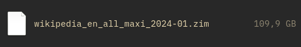
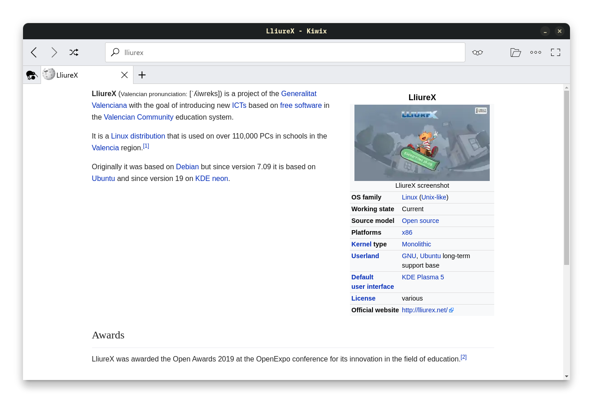

¡Ey! Qué tal. Yo estoy aquí, descargándome la Wikipedia entera en inglés. Con imágenes incluidas y todo.
¿Qué por qué? Tengo espacio de sobra en mis discos duros, más me vale aprovecharlo, ¿no?
Wikipedia es una de las muchas páginas que damos por hecho que tendremos siempre a mano y a una búsqueda
en el navegador, pero me gusta ser un poco más paranoico y, por unos míseros 100 gigas, creo que merece la pena
tenerlo guardado en un disco duro suelto. Ya sabes. Caídas de Internet, apocalipsis digital, apocalipsis físico
(IRL para que lo entiendas), puede pasar de todo.
Esto se trata de un archivo .zim que se puede abrir en un lector de este tipo de archivos de manera offline
para poder navegar por las diferentes páginas. El que uso yo se llama Kiwix.
Una vez abrimos Kiwix podemos seleccionar qué archivo podemos abrir. ¡Mira qué maravilloso artículo!
Ostras, no sabía que se basaba en KDE Neon. Pensaba que seguían con Ubuntu.
La cosa, que te descargues Wikipedia. Los archivos se pueden descargar desde esta página.
Si quisieras descargar el que está en español, por ejemplo, clicarías en wikipedia_es_all_maxi_2024-05.zim,
que es aquel que contiene todas las
categorías con imágenes.
Si haces caso a cómo están nombrados, podrás buscar los archivos específicos para el tema que busques (si no quieres
descargarla entera) y/o sus versiones sin imágenes on en otros idiomas.
Ya me lo agradecerás cuando en 2038 nos hayan cortado todo acceso libre a la información, el mundo sea un aftermath nuclear
y quieras saber qué es
una craneosinostosis.
Yo, personalmente, no sé qué es.